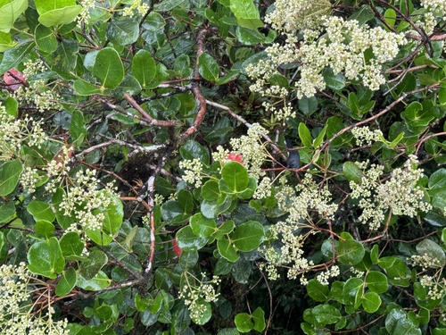

Alzateaceae
Alzatea Family
Alzateaceae is a monotypic family of flowering plants in the order Myrtales, containing only a single genus and species, Alzatea verticillata. This evergreen shrub or small tree (sometimes a hemiepiphyte) is native to Neotropical cloud forests from Costa Rica to Bolivia. It is distinguished by its opposite leaves with prominent interpetiolar stipules, small apetalous flowers, and capsule fruits with winged seeds.
Overview
The Alzateaceae family consists of a single species, Alzatea verticillata, sometimes divided into subspecies. It is endemic to the Neotropics, found in wet montane forests (cloud forests) at moderate to high elevations, ranging from Costa Rica and Panama southward along the Andes through Colombia, Ecuador, Peru, and Bolivia. It grows as an evergreen shrub, small tree, or occasionally starts life as a hemiepiphyte on other trees.
Alzateaceae represents a distinct lineage within the large and diverse order Myrtales. Its members are characterized by leathery, opposite leaves with notable stipules fused between the petioles (interpetiolar). The flowers are small, lack petals, and are typically borne in few-flowered clusters (cymes). The fruit is a dry capsule containing numerous small, winged seeds, suggesting wind dispersal.
Due to its restricted distribution, relatively inconspicuous nature, and lack of major economic uses, Alzateaceae is not a widely known family. Its primary significance is botanical, representing a unique evolutionary branch within the Myrtales and contributing to the biodiversity of Neotropical cloud forest ecosystems.
Quick Facts
- Scientific Name: Alzateaceae
- Common Name: Alzatea family (no widely used common name)
- Number of Genera: 1 (Alzatea)
- Number of Species: 1 (Alzatea verticillata)
- Distribution: Neotropics: Costa Rica to Bolivia (montane rainforests)
- Evolutionary Group: Eudicots - Rosids - Myrtales
- Current Date: March 29, 2025
Key Characteristics
Growth Form and Habit
Evergreen shrubs, small trees, or hemiepiphytes, often with smooth bark.
Leaves
Leaves are opposite (rarely appearing whorled due to short internodes), simple, with entire margins and a leathery (coriaceous) texture. They are petiolate. A key diagnostic feature is the presence of conspicuous interpetiolar stipules – stipules from opposing leaves are fused together between the petioles, forming a structure that often encircles the stem node. Glands may be present at the leaf base or on the stipules.
Inflorescence
Flowers are borne in terminal or axillary few-flowered cymes or dichasia (forked cymes).
Flowers
Flowers are small, bisexual, actinomorphic (radially symmetrical), and lack petals (apetalous). They are typically 4-merous or 5-merous.
- Calyx: 4 or 5 fleshy sepals, fused below into a short tube, lobes are persistent in fruit.
- Corolla: Absent.
- Androecium: Stamens number 8 or 10 (twice the number of sepals), arranged in a single whorl. Filaments are distinct and arise from near the base of the calyx tube. Anthers are small, basifixed, dehiscing via longitudinal slits.
- Gynoecium: Ovary is superior, composed of 2 fused carpels forming a 2-locular ovary. Placentation is axile, with numerous ovules per locule. There is a single short style ending in a capitate or slightly 2-lobed stigma.
Fruits and Seeds
The fruit is a small, dry, somewhat flattened loculicidal capsule that splits open into 2 valves. It is often reddish when mature and crowned by the persistent calyx lobes.
Seeds are numerous, small, flattened, and possess membranous wings at both ends or all around, aiding in wind dispersal. Endosperm is sparse.
Chemical Characteristics
Plants contain ellagic acid and tannins. Aluminum accumulation in tissues has been reported. They lack the essential oils common in the related Myrtaceae family.
Field Identification
Identifying Alzateaceae (Alzatea verticillata) relies heavily on recognizing its unique combination of vegetative features, particularly the leaves and stipules, within its specific habitat and geographic range:
Primary Identification Features
- Habitat and Location: Shrubs, small trees, or hemiepiphytes in Neotropical montane rainforests/cloud forests (Costa Rica to Bolivia).
- Opposite Leaves: Simple, entire, leathery leaves arranged oppositely.
- Prominent Interpetiolar Stipules: Stipules from opposing leaves are fused together between the petioles, often forming a noticeable structure at the node (key feature).
- Apetalous Flowers: Flowers lack petals, having only 4-5 fleshy sepals.
- Stamen Number: 8 or 10 stamens (double the sepal number).
- Superior Ovary.
- Capsule Fruit: Fruit is a small, dry, 2-valved capsule.
- Winged Seeds: Seeds inside the capsule are small, numerous, and winged.
Secondary Identification Features
- Flowers in Few-flowered Cymes: Inflorescences are typically small clusters.
- Leathery Leaf Texture.
- Smooth Bark (often).
Seasonal Identification Tips
- Year-round: The evergreen habit, opposite leaves with distinctive interpetiolar stipules, and overall growth form are the best identification features at any time.
- Flowering/Fruiting Season: Variable depending on location and altitude within its range. Flowers are small and inconspicuous; the small, reddish capsules might be more noticeable when present.
Common Confusion Points
The opposite leaves with prominent interpetiolar stipules are quite distinctive but could potentially be confused with some members of:
- Rubiaceae (Coffee family): Many Rubiaceae are shrubs/trees with opposite leaves and interpetiolar stipules. However, Rubiaceae flowers typically have petals (usually fused into a tube), often 4-5 stamens (equal to corolla lobes), and always have an inferior ovary. Fruit types vary but differ from the Alzateaceae capsule.
- Melastomataceae (Melastome family): Many Neotropical shrubs/trees with opposite leaves. Melastomataceae typically have distinctive leaf venation (3-9 main veins curving from base to apex), lack prominent interpetiolar stipules, possess petals, have distinctively shaped stamens (often with appendages), and different fruit types (usually berries or capsules).
- Myrtaceae (Myrtle family): Many shrubs/trees with opposite, simple, entire leaves, but they lack interpetiolar stipules, often have pellucid dots (glands) in leaves giving an aromatic scent when crushed, possess petals (usually 4-5), have numerous stamens, and fruit is typically a berry or capsule.
- Other families in Myrtales: While related, families like Lythraceae and Onagraceae typically have different stipule arrangements (if present), possess petals, and have different floral formulas and fruit types.
The combination of opposite leaves, prominent interpetiolar stipules, apetalous flowers with 8 or 10 stamens, superior ovary, and capsule fruit with winged seeds is unique to Alzateaceae.
Field Guide Quick Reference
Look For:
- Shrub/Tree/Hemiepiphyte (Neotropics)
- Opposite, simple, entire, leathery leaves
- Interpetiolar stipules (prominent)
- Small flowers in cymes
- Apetalous flowers (no petals)
- 4-5 sepals, 8 or 10 stamens
- Superior ovary
- Fruit: Small, 2-valved capsule
- Numerous winged seeds
Key Variations:
- (Monotypic family - essentially no variation at this level)
- Flower parts 4-merous vs 5-merous
- Habit can vary (shrub to small tree or hemiepiphyte)
Notable Examples
Being a monotypic family, Alzateaceae is represented solely by its single species:

Alzatea verticillata
(No common name)
The only species in the Alzateaceae family. It is an evergreen woody plant found in Neotropical cloud forests. It can grow as a shrub, small tree, or start as a hemiepiphyte. Its defining features include the opposite, leathery leaves coupled with large, fused interpetiolar stipules, small apetalous flowers, and capsular fruits containing winged seeds.

Alzatea verticillata (Detail)
Interpetiolar Stipules
This image highlights the key vegetative diagnostic feature: the prominent stipules located between the petioles of the opposite leaves. These stipules are fused together, often forming a noticeable sheath or structure at the node, distinguishing Alzatea from many other plants with opposite leaves.

Alzatea verticillata (Fruit/Seeds)
Alzatea Fruit and Seeds
The fruit is a small (typically <1 cm), dry, reddish, 2-valved capsule that splits open to release numerous tiny, flattened seeds. The seeds possess membranous wings, facilitating dispersal by wind, which is common for canopy or emergent species in rainforest environments.
Phylogeny and Classification
Alzateaceae is placed within the large rosid order Myrtales. This order includes well-known families like Myrtaceae (eucalyptus, guava), Lythraceae (crape myrtle, pomegranate), Onagraceae (evening primrose), Melastomataceae, and Combretaceae. The Myrtales are characterized by features such as opposite leaves (common but not universal), presence of a floral tube (hypanthium) in many members, included phloem (internal phloem), and often vestured pits in the wood xylem.
Molecular phylogenetic studies position Alzateaceae within the Myrtales, but its exact placement has sometimes been uncertain. Current consensus often places it as sister to a clade comprising three small Southern African families: Penaeaceae, Oliniaceae, and Rhynchocalycaceae. This entire group (Alzateaceae + Penaeaceae + Oliniaceae + Rhynchocalycaceae) is then sister to the large family Crypteroniaceae (including former Henslowiaceae, etc.) from Southeast Asia. These relationships highlight complex biogeographic patterns within the order.
Position in Plant Phylogeny
- Kingdom: Plantae
- Clade: Angiosperms (Flowering plants)
- Clade: Eudicots
- Clade: Rosids
- Order: Myrtales
- Family: Alzateaceae
Evolutionary Significance
Alzateaceae, as a monotypic family, offers unique evolutionary perspectives:
- Relictual Lineage: Represents an isolated evolutionary branch within Myrtales with no close relatives in the Neotropics, suggesting it might be a relict of a past, potentially wider distribution.
- Biogeographic Puzzle: Its relationship to Southern African families (Penaeaceae clade) presents an interesting biogeographic connection, hinting at ancient Gondwanan links or long-distance dispersal events.
- Morphological Uniqueness: The combination of interpetiolar stipules (uncommon in Myrtales outside Rubiaceae, which is not in Myrtales), apetalous flowers, superior ovary, and winged seeds distinguishes it within the order.
- Understanding Myrtales Diversification: Studying its features helps in reconstructing the ancestral traits and evolutionary pathways within the diverse Myrtales order.